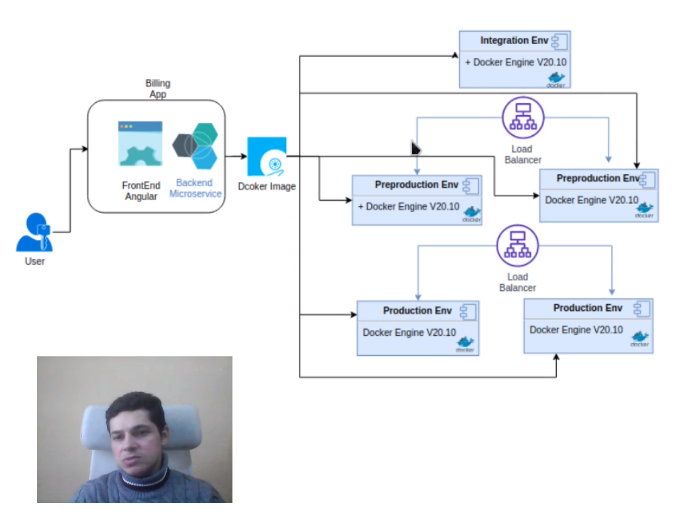

CURSO DEVOPS INTEGRADO

- La idea es una aplicación hecha en angular con base de datos postgres y servidor web nginx. La cuestión es tener 5 nodos: uno de test, dos de preproducción y dos de producción. De manera más robusta sería tener en cada nodo la app, el server web y la bbdd pero actualmente solo necesitamos tener en cada nodo Docker Engine instalado para una mayor facilidad y rapidez.
INSTALACIÓN


Instalamos Docker engine y docker compose en nuestra máquina. Comprovamos con --version.
*NOTA WINDOWS+
Podemos instalar docker engine en windows. Instalamos docker desktop. Activamos virtualización en la bios y activamos WSL2 con
Enable-WindowsOptionalFeature -Online -FeatureName $("VirtualMachinePlatform", "Microsoft-Windows-Subsystem-Linux")
-
Cogemos del repositorio de dockerhub del profe la imagen a descargar que contiene la app de facturación en angular a utilizar en este curso:
docker pull sotobotero/udemy-devops:0.0.1 -
Iniciamos el contenedor de la app mapeando puertos web y para puerto gráfico:
docker run -p 80:80 -p 8080:8080 --name billingapp sotobotero/udemy-devops:0.0.1Comprobamos que funcionan en www.localhost:80 y www.localhost:8080/swagger-ui/index.html.
DOCKER-COMPOSE
V1 SCRATCH
- Creamos un docker-compose de prueba con dos nombres diferentes para ver como arranca de manera directa o con un nombre diferente:
version: '3.1'
services:
db:
container_name: postgres
image: postgres
restart: always
environment:
ports:
- 5432:5432
environment:
POSTGRES_USER: postgres
POSTGRES_PASSWORD: qwerty
POSTGRES_DB: postgres
adminer:
container_name: adminer
image: adminer
restart: always
depends_on:
- db
ports:
- 9090:8080
Descargamos con
docker-compose pull // docker-compose -f fichero.yml pulle iniciamos condocker-compose -f fichero.yml up -d
Ahora podemos entrar de manera grafica a postgres con admirer en www.localhost:9090 e introducimos las credenciales y funcionando.
- Ahora vamos a crear from scratch un Dockerfile para crear la app de facturación:
#Creamos nuestra app de facturación
#Partimos de imagen base
FROM nginx:alpine
#Instalamos java
RUN apk -U add openjdk8 && rm -rf /var/cache/apk/*;
RUN apk add ttf-dejavu
#Instalamos java microservicios y variables
ENV JAVA_OPTS=""
ARG JAR_FILE
ADD ${JAR_FILE} app.jar
#Instalamos la app en nginx server y creamos un volumen para info y conf
VOLUME /tmp
RUN rm -rf /usr/share/nginx/html/*
COPY nginx.conf /etc/nginx/nginx.conf
COPY dist/billingApp /usr/share/nginx/html
COPY appshell.sh appshell.sh
#mapeamos puertos
EXPOSE 80 8080
ENTRYPOINT ["sh", "/appshell.sh"]
Lo construimos con
docker build -t facturacionapp:prod --no-cache --build-arg JAR_FILE=target/*.jar .
Lo iniciamos con los puertos EXPOSEdocker run -p 80:80 -p 8080:8080 --name billingapp facturacionapp:prod
Luego podemos subir nuestra version a Dockerhub condocker tag facturacionapp:prod isx46410800/facturacionapp:1.0y la subimosdocker push isx46410800/facturacionapp:1.0
V2 SERVICES
-
Siempre es
local-host:container. -
Ahora creamos nuestra app de facturación pero servicio a servicio separado en el docker-compose. Por un lado nos descargamos una imagen de nginx, por otro lado java y despues construimos manualmente con Dockerfile nuestra app angular y nuestra bbdd de postgresql:
version: '3.1'
services:
#database engine service
postgres_db:
container_name: postgres
image: postgres:latest
restart: always
environment:
ports:
- 5432:5432
volumes:
#allow *.sql, *.sql.gz, or *.sh and is execute only if data directory is empty
- ./dbfiles:/docker-entrypoint-initdb.d
- /var/lib/postgres_data:/var/lib/postgresql/data
environment:
POSTGRES_USER: postgres
POSTGRES_PASSWORD: qwerty
POSTGRES_DB: postgres
#database admin service
adminer:
container_name: adminer
image: adminer
restart: always
depends_on:
- postgres_db
ports:
- 9090:8080
#Billin app backend service
billingapp-back:
build:
context: ./java
args:
- JAR_FILE=*.jar
container_name: billingApp-back
environment:
- JAVA_OPTS=
-Xms256M
-Xmx256M
depends_on:
- postgres_db
ports:
- 8080:8080
#Billin app frontend service
billingapp-front:
build:
context: ./angular
container_name: billingApp-front
depends_on:
- billingapp-back
ports:
- 80:80
Construir las imagenes definidas en la orquestación:
docker-compose -f stack-billing.yml build
Inicializar los contenedores de los servicios de la orquestación:docker-compose -f stack-billing.yml up -d
No se ha especificado, pero todo esto se crea en una misma red virtual para que se puedan comunicar entre los diferentes servicios.
- Resumen de comandos en DOCKER-COMPOSE:
Eliminar todos los contenedores detenidos: `docker system prune`
Eliminar todas las imágenes: docker rmi $(docker images -a -q)
Listar los volumenes: docker volume ls
Eliminar todos los volumenes: docker volume prune
Construir las imagenes definidas en la orquestación: docker-compose -f stack-billing.yml build
Inicializar los contenedores de los servicios de la orquestación: docker-compose -f stack-billing.yml up -d
Detener todos los servicios de la orquestación: docker-compose -f stack-billing.yml stop
Escalar un servicio al iniciar la orquestación: docker-compose -f stack-billing.yml up --scale billingapp-front=3 -d --force-recreate
Detener todos los contenedores: docker stop $(docker ps -a -q)
Listar las redes virtuales: docker network ls
Eliminar las redes virtuales: docker network prune
Reconstruir las imagenes: docker-compose -f stack-billing.yml build --no-cache
Reconstruir los contenedores d ela orquestación: docker-compose -f stack-billing.yml up -d --force-recreate
-
Al crear los volumenes veremos que en las rutas indicadas tendremos los registros de la bbdd que vamos rellenando aunque detengamos y borremos nuestro docker-compose.
-
Podemos escalar servicios con este comando:
docker-compose -f stack-billing.yml up --scale billingapp-front=3 -d --force-recreatedTener cuidado que no este puesto el container name y poner un rango de puertos(80-83:80) en este caso en el front que escalamos.
-
La otra forma de escalar seria añadir directamente en el docker-compose.yaml:
#Billin app frontend service
billingapp-front:
build:
context: ./angular
deploy:
replicas: 3
resources:
limits:
cpus: "0.10"
memory: 250M
reservations:
cpus: "0.1"
memory: 120M
#container_name: billingApp-front
depends_on:
- billingapp-back
ports:
- 80-83:80
Con
docker statsvemos las estadisticas que por ejemplo delimitamos en el fichero docker-compose.yml.
V3 SERVICES TEST/PROD
- Ahora veremos como montar de nuevo nuestra infraestructura de app, bbdd, server web y java, primero deploy en test y luego en producción:
version: '3.1'
services:
#database engine service
postgres_db_prod:
container_name: postgres_prod
image: postgres:latest
restart: always
networks:
- env_prod
environment:
ports:
- 5432:5432
volumes:
#allow *.sql, *.sql.gz, or *.sh and is execute only if data directory is empty
- ./dbfiles:/docker-entrypoint-initdb.d
- /var/lib/postgres_data_prod:/var/lib/postgresql/data
environment:
POSTGRES_USER: postgres
POSTGRES_PASSWORD: qwerty
POSTGRES_DB: postgres
#database engine service
postgres_db_prep:
container_name: postgres_prep
image: postgres:latest
restart: always
networks:
- env_prep
environment:
ports:
- 4432:5432
volumes:
#allow *.sql, *.sql.gz, or *.sh and is execute only if data directory is empty
- ./dbfiles:/docker-entrypoint-initdb.d
- /var/lib/postgres_data_prep:/var/lib/postgresql/data
environment:
POSTGRES_USER: postgres
POSTGRES_PASSWORD: qwerty
POSTGRES_DB: postgres
#database admin service
#Use for All enviroments
adminer:
container_name: adminer
image: adminer
restart: always
networks:
- env_prod
- env_prep
depends_on:
- postgres_db_prod
- postgres_db_prep
ports:
- 9090:8080
#ENV_PROD
#Billin app backend service
billingapp-back-prod:
build:
context: ./java
args:
- JAR_FILE=billing-0.0.3-SNAPSHOT.jar
networks:
- env_prod
container_name: billingApp-back-prod
environment:
- JAVA_OPTS=
-Xms256M
-Xmx256M
depends_on:
- postgres_db_prod
ports:
- 8080:8080
#Billin app frontend service
billingapp-front_prod:
build:
context: ./angular
networks:
- env_prod
deploy:
replicas: 2
resources:
limits:
cpus: "0.15"
memory: 250M
#recusos dedicados, mantiene los recursos disponibles del host para el contenedor
reservations:
cpus: 0.1
memory: 128M
#container_name: billingApp-front
depends_on:
- billingapp-back-prod
#rango de puertos para escalar
ports:
- 8081-8082:80
#ENV_PREP
#Billin app backend service
billingapp-back-prep:
build:
context: ./java
args:
- JAR_FILE=billing-0.0.2-SNAPSHOT.jar
networks:
- env_prep
container_name: billingApp-back-prep
environment:
- JAVA_OPTS=
-Xms256M
-Xmx256M
depends_on:
- postgres_db_prep
ports:
- 7080:7080
#Billin app frontend service
billingapp-front-prep:
build:
context: ./angular
networks:
- env_prep
deploy:
replicas: 2
resources:
limits:
cpus: "0.15"
memory: 250M
#recusos dedicados, mantiene los recursos disponibles del host para el contenedor
reservations:
cpus: 0.1
memory: 128M
#container_name: billingApp-front
depends_on:
- billingapp-back-prep
#rango de puertos para escalar
ports:
- 7081-7082:81
networks:
env_prod:
driver: bridge
#activate ipv6
driver_opts:
com.docker.network.enable_ipv6: "true"
#IP Adress Manager
ipam:
driver: default
config:
-
subnet: 172.16.232.0/24
gateway: 172.16.232.1
-
subnet: "2001:3974:3979::/64"
gateway: "2001:3974:3979::1"
env_prep:
driver: bridge
#activate ipv6
driver_opts:
com.docker.network.enable_ipv6: "true"
#IP Adress Manager
ipam:
driver: default
config:
-
subnet: 172.16.235.0/24
gateway: 172.16.235.1
-
subnet: "2001:3984:3989::/64"
gateway: "2001:3984:3989::1"
Se especificas las networks que creamos y copiamos un clon de servicio de prod y pre teniendo en cuenta cambiar el path de la bbdd para que no se conflicten.
docker-compose -f stack-billing.yml build --no-cache
docker-compose -f stack-billing.yml up -d --force-recreate
KUBERNETTES
INSTALACIÓN
-
La arquitectura consta de un cluster donde hay nodos que trabajan(master y workers), donde dentro estan los pods. En este cluster tenemos Control manager, etcd(bbdd) y scheduler. Tenemos un Apiserver que es quien nos provee la interaccion con el cluster a traves de los comandos kubectl o manera grafica con el kubernetes dashboard.
-
Normalmente se usa la infraestructura de amazon, azure o google.
-
Minikube simula la infraestrura de un cluster de kubernetes y contiene todos los componentes necesarios en un solo nodo.
-
Vemos si nuestro Linux tiene virtualización:
grep -E --color 'vmx|svm' /proc/cpuinfo -
Descargar kubectl y hacerlo ejecutable:
curl -LO https://storage.googleapis.com/kubernetes-release/release/v1.20.0/bin/linux/amd64/kubectl && chmod +x kubectl -
Crear el directorio para kubectl:
sudo mv ./kubectl /usr/local/bin/kubectl -
Verificar version:
kubectl version --client -
Descargar minnukube y hacerlo ejecutable:
curl -Lo minikube https://storage.googleapis.com/minikube/releases/latest/minikube-linux-amd64 && chmod +x minikube -
Crear el directorio para minikube:
sudo mkdir -p /usr/local/bin/ -
Lanzar el ejecutable:
sudo install minikube /usr/local/bin/ -
Comandos para operar minikube, lo lanzamos con
minikube start:
minikube start
minikube status
minikube stop
Por defecto cuando hacemos start se ha de indicar cual es el hipervisor a trabajar, por defecto coge docker, pero se le puede poner hyperV, virtualbox,etc.
Un hipervisor o monitor de máquina virtual es una capa de software para realizar una virtualización de hardware que permite utilizar, al mismo tiempo, diferentes sistemas operativos en una misma computadora.
- Comprobamos que está encendido y el contenedor docker que se crea:
[miguel@fedora Downloads]$ minikube status
minikube
type: Control Plane
host: Running
kubelet: Running
apiserver: Running
kubeconfig: Configured
[miguel@fedora Downloads]$ docker ps
CONTAINER ID IMAGE COMMAND CREATED STATUS PORTS NAMES
82f6891e5f44 gcr.io/k8s-minikube/kicbase:v0.0.28 "/usr/local/bin/entr…" About a minute ago Up About a minute 127.0.0.1:49157->22/tcp, 127.0.0.1:49156->2376/tcp, 127.0.0.1:49155->5000/tcp, 127.0.0.1:49154->8443/tcp, 127.0.0.1:49153->32443/tcp minikube
-
Lanzar el dashboard grafico donde nos manda a una url para manejarlo:
minikube dashboard -
Eliminar el cluster de minikube:
minikube delete -
Inicar un nuevo cluster de minikube usando el controlador hypervisor de virtualbox:
minikube start --driver=virtualbox
PODS
-
Vamos a crear dentro de un cluster una app para que el cliente desde fuera pueda acceder desde el navegador. Para ello se crea un POD a través de la imagen de la app, con volumenes persistentes y este pod tiene una IP no visible. Para que sea visible desde fuera, se crea un servicio para poder acceder a el desde una petición de fuera.
-
Creamos un pod desde nuestra imagen de un repositorio dockerhub:
kubectl run kbillingapp --image=sotobotero/udemy-devops:0.0.1 --port=80 80 -
Lo vemos con
kubetctl get podsykubectl describe pod name_pod. -
El pod tiene un IP no visible desde fuera y para que se pueda acceder se ha de exponer esta ip como si hicieramos un servicio:
kubectl expose pod kbillingapp --type=LoadBalancer --port=8080 --target-port=80
[miguel@fedora Downloads]$ kubectl get services
NAME TYPE CLUSTER-IP EXTERNAL-IP PORT(S) AGE
kbillingapp LoadBalancer 10.105.34.39 <pending> 8080:30424/TCP 9s
kubernetes ClusterIP 10.96.0.1 <none> 443/TCP 25m
Al ser minikube y no tener mas nodos trabajando (vida real no pasaria) tenemos que pasar otro comando para obtener esa ip externa y acceder:
[miguel@fedora Downloads]$ minikube service kbillingapp
|-----------|-------------|-------------|---------------------------|
| NAMESPACE | NAME | TARGET PORT | URL |
|-----------|-------------|-------------|---------------------------|
| default | kbillingapp | 8080 | http://192.168.49.2:30424 |
|-----------|-------------|-------------|---------------------------|
VARIABLES Y SECRETS
- En este caso vamos a tener dos pods: uno con una bbdd postgres que contiene volumenes persistentes y otro el pgadmin grafico. Esto tendrá un servicio para poder acceder desde fuera de manera grafica.

- Para ello, vamos a crear en un SECRET fichero yaml, las credenciales de entrada para postgresql para que esten encriptadas y no sean visibles, lo hacemos en base64 con el comando
echo -n "palabra" | base64y para descodificarloecho "xxxx" | base64 -d:
#object that store enviroments variables that could be have sensitive data like a password
apiVersion: v1
kind: Secret
metadata:
name: postgres-secret
labels:
app: postgres
#meant that we can use arbitrary key pair values
type: Opaque
data:
POSTGRES_DB: cG9zdGdyZXM=
POSTGRES_USER: cG9zdGdyZXM=
POSTGRES_PASSWORD: cXdlcnR5
Fichero secret-dev.yaml
- Creamos otro secret para el PGADMIN grafico:
#object that store enviroments variables that could be have sensitive data like a password
apiVersion: v1
kind: Secret
metadata:
name: pgadmin-secret
labels:
app: postgres
#meant that we can use arbitrary key pair values
type: Opaque
data:
PGADMIN_DEFAULT_EMAIL: YWRtaW5AYWRtaW4uY29t
PGADMIN_DEFAULT_PASSWORD: cXdlcnR5
PGADMIN_PORT: ODA=
Fichero secret-pgadmin.yaml
VOLUMES Y CONFIGMAPS
- Ahora creamos un volumen para la data persistente y un reclamo de espacio para ello. También creamos un configmap para la configuración de que lance un script a la hora de crear todo:
#persistence volumen (PV) is a piece of storage that have idependent lifecycle from pods
#thees preserve data throug restartin, rescheduling and even deleting pods
#PersistenceVolumeCalin is a request for storage by the user that can be fulfilled by teh PV
kind: PersistentVolume
#version of ApiServer on control panel node (/api/v1) check using kubectl api-versions
apiVersion: v1
metadata:
name: postgres-volume
labels:
#it is aplugin suport many luke amazon EBS azure disk etc. local = local storage devices mounted on nodes.
type: local
app: postgres
spec:
storageClassName: manual
capacity:
storage: 5Gi
#many pods on shcheduled on differents nodes can read and write
accessModes:
- ReadWriteMany
#path on cluster's node
hostPath:
path: "/mnt/data/"
#it is a reques of resource (persistence volume) from a pod by example, teh pod claim by a storage throug PVC
kind: PersistentVolumeClaim
apiVersion: v1
metadata:
name: postgres-claim
labels:
app: postgres
spec:
storageClassName: manual
accessModes:
- ReadWriteMany
resources:
requests:
storage: 2Gi
apiVersion: v1
kind: ConfigMap
metadata:
name: postgres-init-script-configmap
data:
initdb.sh: |-
#!/bin/bash
set -e
psql -v ON_ERROR_STOP=1 --username "$POSTGRES_USER" --dbname "$POSTGRES_DB" <<-EOSQL
CREATE USER billingapp WITH PASSWORD 'qwerty';
CREATE DATABASE billingapp_db;
GRANT ALL PRIVILEGES ON DATABASE billingapp_db TO billingapp;
EOSQL
DEPLOYS Y SERVICES
- Ahora definimos el deloy completo de la base de datos que contiene un fichero de variables de entorno, un volumen persistente, el reclamo de espacio del volumen y el configmap con el script de iniciación.
apiVersion: apps/v1
kind: Deployment
metadata:
name: postgres-deployment
labels:
app: postgres
spec:
#Pods number replicates
replicas: 1
#Define how the Deployment identify the pods that it could manage
selector:
matchLabels:
app: postgres
#pod template specification
template:
metadata:
#define teh labels for all pods
labels:
app: postgres
spec:
containers:
- name: postgres
image: postgres:latest
imagePullPolicy: IfNotPresent
#open the port to allow send and receive traffic in teh container
ports:
- containerPort: 5432
#read envars from secret file
envFrom:
- secretRef:
name: postgres-secret
volumeMounts:
#This is the path in the container on which the mounting will take place.
- mountPath: /var/lib/postgresql/data
name: postgredb
- mountPath: /docker-entrypoint-initdb.d
name : init-script
volumes:
- name: postgredb
persistentVolumeClaim:
claimName: postgres-claim
- name: init-script
configMap:
name: postgres-init-script-configmap
- Ahora hacemos el deploy del pgadmin gráfico para acceder a la bbdd graficamente con el puerto y fichero de varibles de entorno:
apiVersion: apps/v1
kind: Deployment
metadata:
name: pgadmin-deployment
spec:
selector:
matchLabels:
app: pgadmin
replicas: 1
template:
metadata:
labels:
app: pgadmin
spec:
containers:
- name: pgadmin4
image: dpage/pgadmin4
envFrom:
- secretRef:
name: pgadmin-secret
ports:
- containerPort: 80
name: pgadminport
- Ahora tenemos que crear los servicios de ambos pods para poder acceder desde fuera en internet a través de un puerto publico y están en nodo port porque solo tenemos un nodo, sino seria por loadbalancer por diferentes ip y su carga:
kind: Service
apiVersion: v1
metadata:
name: postgres-service
labels:
app: postgres
spec:
ports:
- name: postgres
port: 5432
nodePort : 30432
#type: LoadBalancer
type: NodePort
selector:
app: postgres
apiVersion: v1
kind: Service
metadata:
name: pgadmin-service
labels:
app: pgadmin
spec:
selector:
app: pgadmin
type: NodePort
ports:
- port: 80
nodePort: 30200
-
Para crearlo ahora en kubernetes usamos
kubectl apply -f fichero.yaml. Primero los secrets, despues el configmap, despues los volumenes, despues los deploys y si está todo OK, por ultimo los servicios. Comprobamos todo conkubectl get all. -
Con todo lanzado ahora nos podemos conectar desde fuera por la ip de cada uno, no obstante, al ser nuestro un minikube, debemos usar la ip de este y el puerto de cada cosa. Para ver la ip usamos
minikube ip. Ahora tenemos la ip y usamos el puerto de postgres y el puerto de pgadmin para conectarse a cada cosa. Dentro de pgadmin nos podemos conectar a la bbdd de postgres con la ip del pod o la ip del cluster y su puerto correspondente. Si no queremos usar el pgadmin como grafico de bbdd, podemos usar otro motor y nos conectamos al servicio postgres desde fuera y lo tendremos igual. -
Podemos eliminar todo lo realizado con
kubectl delete -f ./.
ORQUESTACIÓN REAL

- Ahora añadiremos el servicio backend y frontend de nuestra aplicación. El frotend está basado en un server nginx y escrita en angular por lo que al usuario que hace la petición le daremos respuesta html. El backend está escrito en springboot. En este caso también se pone una ip fija al servicio postgres ya que la bbdd no sería eficiente que vaya cambiando la ip y no encontraría la info nuestro backend para poder dar respuesta a las peticiones de los usuarios en el frontend a través del navegador.
kind: Service
apiVersion: v1
metadata:
name: postgres-service
labels:
app: postgres
spec:
clusterIP: 10.96.1.2
ipFamilies:
- IPv4
ports:
- name: postgres
port: 5432
nodePort : 30432
#type: LoadBalancer
type: NodePort
selector:
app: postgres
- Para que el engine apunte al registro de imagenes en local usamos:
minikube docker-env
[miguel@fedora deploy_app]$ minikube docker-env
export DOCKER_TLS_VERIFY="1"
export DOCKER_HOST="tcp://192.168.49.2:2376"
export DOCKER_CERT_PATH="/home/miguel/.minikube/certs"
export MINIKUBE_ACTIVE_DOCKERD="minikube"
# To point your shell to minikube's docker-daemon, run:
# eval $(minikube -p minikube docker-env)
eval $(minikube docker-env)
Ahora ya estamos listo para poder crear las imagenes personalizadas y se puedan usar en minikube. Esto solo valdrá en esta terminal.
-
Creamos la imagen de java jar:
docker build -t billingapp-back:0.0.4 --no-cache --build-arg JAR_FILE=/*.jar . -
Creamos la imagen de angular:
docker build -t billingapp-front:0.0.4 --no-cache . -
Una vez creadas las dos imagenes, creamos los dos deployments y los dos servicios de la aplicación a partir de estas imagenes y le ponemos las replicas que necesitamos:
apiVersion: apps/v1
kind: Deployment
metadata:
name: billing-app-back-deployment
spec:
selector:
matchLabels:
app: billing-app-back
replicas: 3
template:
metadata:
labels:
app: billing-app-back
spec:
containers:
- name: billing-app-back
image: billingapp-back:0.0.4
ports:
- containerPort: 7080
name: billingappbport
apiVersion: apps/v1
kind: Deployment
metadata:
name: billing-app-front-deployment
spec:
selector:
matchLabels:
app: billing-app-front
replicas: 2
template:
metadata:
labels:
app: billing-app-front
spec:
containers:
- name: billing-app-front
image: billingapp-front:0.0.4
ports:
- containerPort: 80
name: billingappfport
kind: Service
apiVersion: v1
metadata:
name: billing-app-back-service
labels:
app: billing-app-back
spec:
ports:
- name: billing-app-back
port: 7080
nodePort : 30780
#type: LoadBalancer
type: NodePort
selector:
app: billing-app-back
apiVersion: v1
kind: Service
metadata:
name: billing-app-front-service
labels:
app: billing-app-front
spec:
selector:
app: billing-app-front
type: NodePort
ports:
- port: 80
nodePort: 30100
- Ahora con todos los servicios metidos, con
minikube ippodemos ir con esta ip y el puerto de cada cosa para ver que todo funciona. INtroducir registros y ver como se guardan en la base de datos.

GIT
-
Es un sistema de gestión de versiones distribuido y opensource.
-
Hay dos maneras de trabajo: trunked based es la manera más basica de dos ramas y merge; y gitflow que consiste en trabajar en 5 ramas: master, develop, features(donde se va poniendo el codigo nuevo), releases(donde se prueba develop unido de features en entorno de pruebas) y hotfix(rama que sale de urgencia de master para arreglar fallos urgentes de master en producción).
-
Comandos básicos:
git init
git commit -m ""
git push -u origin master
git branch
git checkout
git branch nueva_rama
git checkout -b nueva_rama
git pull origin master
git push origin features/ma-1.0
git merge master
-
Para usar el tipo GITFLOW se instala:
sudo dnf copr enable elegos/gitflow
dnf install git-flow -
Resumen: En este artículo, hemos explicado el flujo de trabajo de Gitflow. Gitflow es uno de los muchos estilos de flujos de trabajo de Git que podéis utilizar tu equipo y tú.
-
El flujo general de Gitflow es el siguiente:
- Se crea una rama develop a partir de main.
- Se crea una rama release a partir de la develop.
- Se crean ramas feature a partir de la develop.
- Cuando se termina una rama feature, se fusiona en la rama develop.
- Cuando la rama release está lista, se fusiona en las ramas develop y main.
- Si se detecta un problema en main, se crea una rama hotfix a partir de main.
-
Una vez terminada la rama hotfix, esta se fusiona tanto en develop como en main.
-
Con comandos git flow:
# inicio repo git flow
git flow init
# Creación de una rama de función
git flow feature start feature_branch
# Finalización de una rama de función
git flow feature finish feature_branch
# Ramas de publicación
$ git flow release start 0.1.0
Switched to a new branch 'release/0.1.0'
# Para finalizar una rama release, utiliza los siguientes métodos:
git flow release finish '0.1.0'
# Ramas de corrección
git flow hotfix start hotfix_branch
# una rama hotfix se fusiona tanto en main como en develop.
git flow hotfix finish hotfix_branch
- Con comandos git:
# inicio repo git flow
git init
# rama developer
git branch develop
git push -u origin develop
# Creación de una rama de función
git checkout develop
git checkout -b feature_branch
# Finalización de una rama de función
git checkout develop
git merge feature_branch
# Ramas de publicación
git checkout develop
git checkout -b release/0.1.0
Switched to a new branch 'release/0.1.0'
# Para finalizar una rama release, utiliza los siguientes métodos:
git checkout main
git merge release/0.1.0
# Ramas de corrección
git checkout main
git checkout -b hotfix_branch
# una rama hotfix se fusiona tanto en main como en develop.
git checkout main
git merge hotfix_branch
git checkout develop
git merge hotfix_branch
git branch -D hotfix_branch
- Ejemplo: A continuación, se incluye un ejemplo completo que demuestra un flujo de ramas de función. Vamos a suponer que tenemos una configuración del repositorio con una rama main:
git checkout main
git checkout -b develop
git checkout -b feature_branch
# work happens on feature branch
git checkout develop
git merge feature_branch
git checkout main
git merge develop
git branch -d feature_branch
- Además del flujo de feature y release, aquí tenemos un ejemplo de hotfix:
git checkout main
git checkout -b hotfix_branch
# work is done commits are added to the hotfix_branch
git checkout develop
git merge hotfix_branch
git checkout main
git merge hotfix_branch
JENKINS
-
Usaremos una imagen jenkins con la capa blueocean y dentro contiene maven.
-
Maven es una herramienta de software para la gestión y construcción de proyectos Java creada por Jason van Zyl, de Sonatype, en 2002. Es similar en funcionalidad a Apache Ant, pero tiene un modelo de configuración de construcción más simple, basado en un formato XML:
FROM jenkinsci/blueocean
USER root
RUN apk update && apk add wget
RUN wget --no-verbose -O /tmp/apache-maven-3.6.3-bin.tar.gz https://downloads.apache.org/maven/maven-3/3.6.3/binaries/apache-maven-3.6.3-bin.tar.gz
RUN tar xzf /tmp/apache-maven-3.6.3-bin.tar.gz -C /opt/
RUN ln -s /opt/apache-maven-3.6.3 /opt/maven
RUN ln -s /opt/maven/bin/mvn /usr/local/bin
RUN rm /tmp/apache-maven-3.6.3-bin.tar.gz
RUN chown jenkins:jenkins /opt/maven;
ENV MAVEN_HOME=/opt/mvn
USER jenkins
-
Construimos la imagen
docker build -t jenkins/blueocean --no-cache .y el contenedordocker run --name jenkinsblue -p 8080:8080 -p 50000:50000 jenkins/blueocean. -
Entramos a localhost:8080 y pegamos el hash que nos dio al construir el container o lo vemos en el fichero que nos indica y seguimos los pasos de instalación.
PIPELINES
1
- tutorial
Hacemos una pequeña prueba de construir con nuestro gitlab el codigo de billing/pom.xml, añadiendo nuestra credenciales en un proyecto de top-level maven. Probamos la construcción y nos salga SUCCESS.
2
-
Ahora vamos a probar de añadir un WEBHOOK con git para que cuando se haga un cambio en el codigo, automaticamente se lo comunique a jenkins y pueda lanzar un nuevo build.
-
Para ello, usaremos la herramienta NGROK. ngrok es un ejecutable único y sin dependencias que podemos descargar para Windows, Linux, macOS y FreeBSD, y que con una simple instrucción nos permite exponer hacia el exterior cualquier servicio web local que tengamos en nuestro ordenador, en cualquier puerto.
-
Seguimos las instrucciones de registro y luego lanzamos el ngrok para que nos de la url a redirigir entre git y jenkins con
ngrok http puerto_jenkins(8080). -
Vamos a Github donde el codigo de nuestro repo, vamos a settings y añadimos webhook con la url indicada en ngrok
https://64c1-90-168-170-12.ngrok.io/github-webhook/en json y que haga push en cada cosa que pase. Veremos en ngrok en la consola que nos sale STATUS 200 OK. -
Ahora haremos una nueva rama
git branch feature/addtest masterpara hacer cambios y subirlo a git esta nueva rama y cuando detecte este cambio, se lanzará un nuevo webhook que lo podremos comprobar en la consola de ngrok y en github para ver que sí funciona y ahora podamos construir un nuevo pipeline automatico al hacer cambios en el repo.
Session Status online
Account isx46410800 (Plan: Free)
Version 2.3.40
Region United States (us)
Web Interface http://127.0.0.1:4040
Forwarding http://64c1-90-168-170-12.ngrok.io -> http://localhost:8080
Forwarding https://64c1-90-168-170-12.ngrok.io -> http://localhost:8080
Connections ttl opn rt1 rt5 p50 p90
4 0 0.00 0.00 5.19 6.19
HTTP Requests
-------------
POST /github-webhook/ 200 OK
POST /github-webhook/ 200 OK
-
Ahora administraremos jenkins y agregaremos al sistema nuestro servidor github con un secret token que obtendremos de settings - developer options - token de github. Lo añadimos y creamos un nuevo pipeline - github project - repo git con credenciales de usuario - proyecto maven y ponemos clean install y el pom.xml.
-
Ahora hacemos algun cambio en la rama de test y lo subimos y veremos como se lanza correctamente. Una vez que está SUCCESS y estamos satisfechos , hacemos en github un PULL REQUEST(es hacer como un merge a la rama master para integrar lo nuevo) y vemos en settings si está activado lo de eliminar automaticamente al hacer un pull request. Hacemos merge y ya en nuestro local de consola podemos eliminar tambien esta rama.
3
-
En estos pasos hacemos un actualización del codigo de billing añadiendo nuevos test de pruebas. Despues configuramos el build indicando github project, repo git, credenciales, la nueva rama feature/addtest como rama a construir, en comportamientos especiales indicamos jenkins y un email, quitamos el webhook automatico y en el build dejamos el clean install en un projecto maven y añadimos con comando shell: git branch, git checkout origin/master y git merge de la nueva rama. Despues en acciones de despues del build hacemos push solo si está todo SUCCESS e indicamos las ramas de master y origin como si fuese el merge.
-
Acabaremos teniendo en nuestra repositorio github solo una rama y el contenido unido automatizado todo.
-
plugin git jenkins usado para acciones de postbuild,etc.
4
-
Añadiendo SLACK a la integración del proceso automatizado.
-
Creamos un canal normal y luego vamos a apliaciones y buscamos jenkins y lo integramos al canal que hemos creado antes para vincularlo. A continuación, te indica los pasos para integrarlo en el servidor jenkins. Despues en jenkins vamos a plugins e instalamos
slack notification. Despues una vez reiniciado, vamos a configurar - sistema - slack y metemos los datos que nos indica el tutorial de integración. Probamos conexion y SUCCESS/SAVE. -
Ahora configuramos el projecto y al final del todo indicamos en postbuild las notificaciones de slack. Hacemos algun cambio en el projecto y vemos el resultado en slack.
SONARQUBE
INSTALACIÓN Y CONFIGURACIÓN
-
SonarQube es una plataforma para evaluar código fuente. Es software libre y usa diversas herramientas de análisis estático de código fuente como Checkstyle, PMD o FindBugs para obtener métricas que pueden ayudar a mejorar la calidad del código de un programa.
-
Lo vamos a instalar en docker:
docker pull sonarqube
docker run --name sonarqube -p 9000:9000 -p 9002:9002 sonarqube -d -
Ahora creamos una red virtual para jenkins y sonarqube se puedan comunicar:
[miguel@fedora ~]$ docker network create jenkins_sonarqube
0fb0f16f8d5b6db1c9416c0bcbb0b703696acfc41f90b4b84a9c113952a047f9
[miguel@fedora ~]$ docker network connect jenkins_sonarqube sonarqube
[miguel@fedora ~]$ docker network connect jenkins_sonarqube jenkinsblue
Podemos comprobar las redes con
docker container inspect container_name
-
Nos conectamos a sonarqube con
localhost:9000 -
Configuramos sonarqube. Vamos a Administration - security - users - creamos token para jenkins
ccca6584e7016f16486388e025e1ce0251c22d90 -
Ahora vamos a Jenkins, instalamos el plugin de Sonarqube scanner, vamos despues a manage jenkins - sistema - sonarqube y añadimos el token como credenciales de sonarqube(nombre container o ip publica si es remoto). Despues volvemos a Manage jenkins - global tools y en Sonarqube scanner instalamos la ultima version.
-
Ahora vamos a configurar nuestro ultimo pipeline de webhook con slack y añadimos un nuevo paso que pondremos primero en BUILD: nuevo execute con sonarqube, le ponemos un nombre, le ponemos de argumento -X para debugging y despues ponemos las siguientes variables para indicarle donde tiene que analizar el código:
sonar.projectKey=sonarqube
sonar.sources=billing/src/main/java
sonar.java.binaries=billing/target/classes
Nombre proyecto, codigo fuente y binarios.
- Veremos ahora un nuevo icono y menu de SUCCESS de Sonarqube.

ANALISIS DE RESULTADOS
-
Sonarqube nos analiza las lineas de codigo y podemos encontrar: bugs, code smell(mejoras de codigo),etc. Podemos ir a ISSUES y analizar cada linea y ver donde se puede mejorar, asignar a gente, comentarlo, marcar que ya está corregido, ver que lineas afectan, etc.

DOCKER
-
Ahora vamos a montar automaticamente los container con docker. Instalamos el plugin
docker build and publishen jenkins. -
Creamos puente de conexion entre mi maquina y docker engine
ip route show default | awk '/default/ {print $3}' -
En /lib/systemd/system/docker.service añadimos
ExecStart=/usr/bin/dockerd -H fd:// -H=tcp://0.0.0.0:2375 -
Reiniciamos ambos servicios y comprobamos que tengamos los containers encendidos
systemctl daemon-reload y service restart docker. -
Comprobamos que podemos entrar a la API de docker engine
curl http://localhost:2375/images/json

En configurar nuestro pipeline de webhook.
- Ahora hemos cambiado los Dockerfiles y unos ficheros para poner otro puerto y hemos modificado el pipeline para construir la imagen automatizada y subida a dockerhub.

KUBERNETES
-
Ahora nos conectamos al contenedor de jenkins para instalar la herramienta kubect de administración de kubernetes:
docker exec -it --user=root jenkinsblue /bin/bash -
Descargar kubectl y hacerlo ejecutable:
curl -LO https://storage.googleapis.com/kubernetes-release/release/v1.20.0/bin/linux/amd64/kubectl && chmod +x kubectl -
Crear el directorio para kubectl:
sudo mv ./kubectl /usr/local/bin/kubectl -
Verificar version:
kubectl version --client -
Ahora salimos y conectamos jenkins a la red de minikube:
docker network connect minikube jenkinsblue -
Ahora vamos a jenkins e instalamos el plugin de kubernetes.
-
Ahora con los ficheros personalizados para Jenkins, creamos un service account para crear la conexion de jenkins con kubernetes. Despues vemos cual es nuestra url y como obtener el token para poder acceder despues al deploy de kubernetes.
kubectl apply -f jenkins-account.yaml
#this file define a service account for kubernetesplugins on jenkins
---
apiVersion: v1
kind: ServiceAccount
metadata:
name: jenkins
namespace: default
---
kind: Role
apiVersion: rbac.authorization.k8s.io/v1
metadata:
name: jenkins
namespace: default
rules:
- apiGroups: [""]
resources: ["pods","services"]
verbs: ["create","delete","get","list","patch","update","watch"]
- apiGroups: ["apps"]
resources: ["deployments"]
verbs: ["create","delete","get","list","patch","update","watch"]
- apiGroups: [""]
resources: ["pods/exec"]
verbs: ["create","delete","get","list","patch","update","watch"]
- apiGroups: [""]
resources: ["pods/log"]
verbs: ["get","list","watch"]
- apiGroups: [""]
resources: ["secrets"]
verbs: ["get"]
- apiGroups: [""]
resources: ["persistentvolumeclaims"]
verbs: ["create","delete","get","list","patch","update","watch"]
---
apiVersion: rbac.authorization.k8s.io/v1
kind: RoleBinding
metadata:
name: jenkins
namespace: default
roleRef:
apiGroup: rbac.authorization.k8s.io
kind: Role
name: jenkins
subjects:
- kind: ServiceAccount
name: jenkins
---
# Allows jenkins to create persistent volumes
# This cluster role binding allows anyone in the "manager" group to read secrets in any namespace.
kind: ClusterRoleBinding
apiVersion: rbac.authorization.k8s.io/v1
metadata:
name: jenkins-crb
subjects:
- kind: ServiceAccount
namespace: default
name: jenkins
roleRef:
kind: ClusterRole
name: jenkinsclusterrole
apiGroup: rbac.authorization.k8s.io
---
kind: ClusterRole
apiVersion: rbac.authorization.k8s.io/v1
metadata:
# "namespace" omitted since ClusterRoles are not namespaced
name: jenkinsclusterrole
rules:
- apiGroups: [""]
resources: ["persistentvolumes"]
verbs: ["create","delete","get","list","patch","update","watch"]
- Obtenemos la url y el token:
ver la configuracion de minikube
kubectl config view
consultar los server account
kubectl --namespace default get serviceaccount
vel el detalle del server account
kubectl --namespace default get serviceaccount jenkins -o yaml
obtener el token del server account
kubectl describe secrets/jenkins-token-rk2mg
- Despues vamos a sistema - cloud. Abrimos en pestaña nueva, indicamos kubernetes y con los comandos de antes indicamos la url y el contenido del certificado de autoridad. Indicamos las credenciales y test conection. Con esto ya confirmamos que tenemos conexion de jenkins con la api del cluster de kubernetes.

pipeline {
agent any
stages {
stage('clone repository') {
steps {
sh '''java -version
mvn --version
git --version'''
}
}
stage('Deploy billing App') {
steps {
withCredentials(bindings: [
string(credentialsId: 'kubernete-jenkis-server-account', variable: 'api_token')
]) {
sh 'kubectl --token $api_token --server https://192.168.49.2:8443 --insecure-skip-tls-verify=true apply -f deployment-billing-app-back-jenkins.yaml '
}
}
}
}
}

-
Despues lo comprobamos el deploy en el kubernetes dashboard y probarlo en la ip de minikube con el puerto indicado en el yaml.
-
Podemos unir los dos pipelines indicando en el de webhook accion de despues ejecutar con otros proyectos y le ponemos el nombre del deploy_kubernetes y haría los dos deploy seguidos de pipelines.
PROMETEUS
-
Prometheus es un software especializado como sistema de monitorización y alertas escrito en el lenguaje de programación Go. Todos los datos y métricas se almacenan en la base de datos como series temporales (junto al instante de tiempo en el que el valor se ha registrado). También es posible añadir etiquetas de tipo clave-valor junto a estas métricas.
-
Prometheus tiene 3 componentes principales.
- Servidor: Almacena los datos de las métricas.
- Librería Cliente: Se usa para calcular y exponer las métricas al cliente.
-
Gestor de alertas: Genera alertas basadas en reglas.
-
Métricas en Prometheus:
- El tipo de métrica contador es un valor que solo se puede incrementar o bien resetear. Se puede usar para contar el número de peticiones o de errores en una aplicación, que son métricas que nunca se reducen.
- Gauge o medidor es un valor numérico que puede incrementarse o decrementar. Un ejemplo puede ser el número de servidores en un sistema distribuido.
-
El histograma representa los valores en agrupaciones predefinidas y acumuladas en el tiempo. Por ejemplo, se puede usar un histograma para medir los tiempos de respuesta de nuestra aplicación en los intervalos de tiempo establecidos para cada petición de un cliente.
-
Comandos seccion:
1- Namespaces: Clusters virtuales en un mismo cluster fisico (separacion logic ade clusters)
https://kubernetes.io/docs/concepts/overview/working-with-objects/namespaces/
2-verificar namespaces
kubectl get namespace
3- Crear el namespace si no existe
kubectl create namespace monitoring
4-Crear role de monitorizacion
Referencia Authoriation
https://kubernetes.io/docs/reference/access-authn-authz/rbac/
kubectl apply -f moniring-role.yaml
5- Crear fichero de configuracion para externalizar la configuracion de prometheus(independiente del ciclo de vida del contenedor)
kubectl apply -f configmap-prometheus.yaml
6- Crear el contenedor y el servicio de prometheus (el contenedor)
kubectl apply -f deployment-prometheus.yaml
7- verificar los pods del namespace monitoring
kubectl get all --namespace=monitoring
Vamos a minikube ip para saber la ip y el puerto 30000 para ver que tenemos ya prometheus en marcha.
-
Dentro de prometheus, en status-target vemos los jobs creados en los jobs del yaml.
-
Despues creamos servicios de metricas y alertas.
GRAFANA
- Grafana es el componente que nos permitirá crear dashboards para comprender lo que está pasando en nuestro sistema monitorizado. Se integra perfectamente con el software de Prometheus que, aunque ya nos proporciona estos gráficos en su propia interfaz gráfica, están pensados como un mecanismo de test o debug.
apiVersion: apps/v1
kind: Deployment
metadata:
name: grafana
namespace: monitoring
spec:
replicas: 1
selector:
matchLabels:
app: grafana
template:
metadata:
name: grafana
labels:
app: grafana
spec:
containers:
- name: grafana
image: grafana/grafana:latest
ports:
- name: grafana
containerPort: 3000
resources:
limits:
memory: "1Gi"
cpu: "1000m"
requests:
memory: 500M
cpu: "500m"
volumeMounts:
- mountPath: /var/lib/grafana
name: grafana-storage
- mountPath: /etc/grafana/provisioning/datasources
name: grafana-datasources
readOnly: false
volumes:
- name: grafana-storage
emptyDir: {}
- name: grafana-datasources
configMap:
defaultMode: 420
name: grafana-datasources
---
apiVersion: v1
kind: Service
metadata:
name: grafana
namespace: monitoring
annotations:
prometheus.io/scrape: 'true'
prometheus.io/port: '3000'
spec:
selector:
app: grafana
type: NodePort
ports:
- port: 3000
targetPort: 3000
nodePort: 32000
###############################################
#grafana public templates
#https://grafana.com/grafana/dashboards?dataSource
#https://grafana.com/grafana/dashboards/6417
#https://grafana.com/grafana/dashboards/8588
apiVersion: v1
kind: ConfigMap
metadata:
name: grafana-datasources
namespace: monitoring
#This data source is fro prometheus, You can add more datasources here adding more .yml files
data:
prometheus.yaml: |-
{
"apiVersion": 1,
"datasources": [
{
"access":"proxy",
"editable": true,
"name": "prometheus",
"orgId": 1,
"type": "prometheus",
"url": "http://prometheus-service.monitoring.svc:8280",
"version": 1
}
]
}